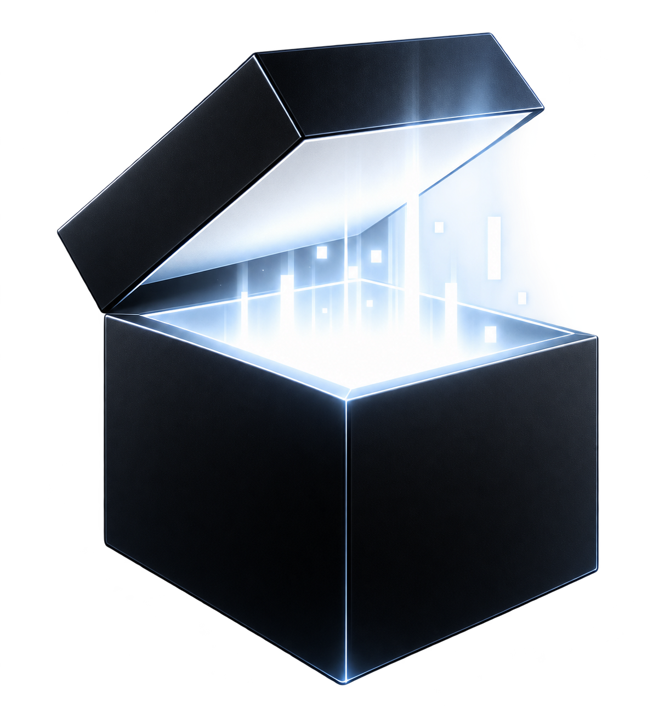

Native C++ game AI, visible reinforcement learning and live diagnostics.
Download NJE for Windows x64
Windows 10/11 and OpenGL 4.6. Personal evaluation under the included license.
Release notes · Alpha update feed